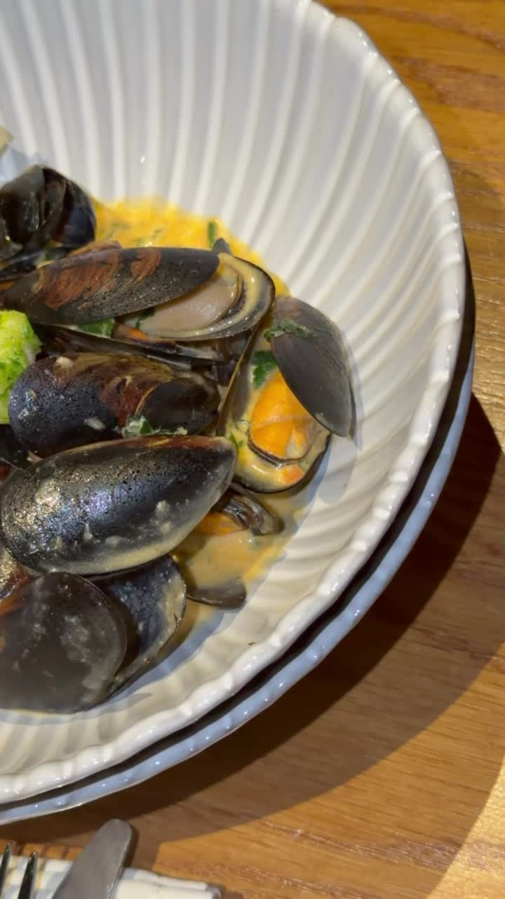
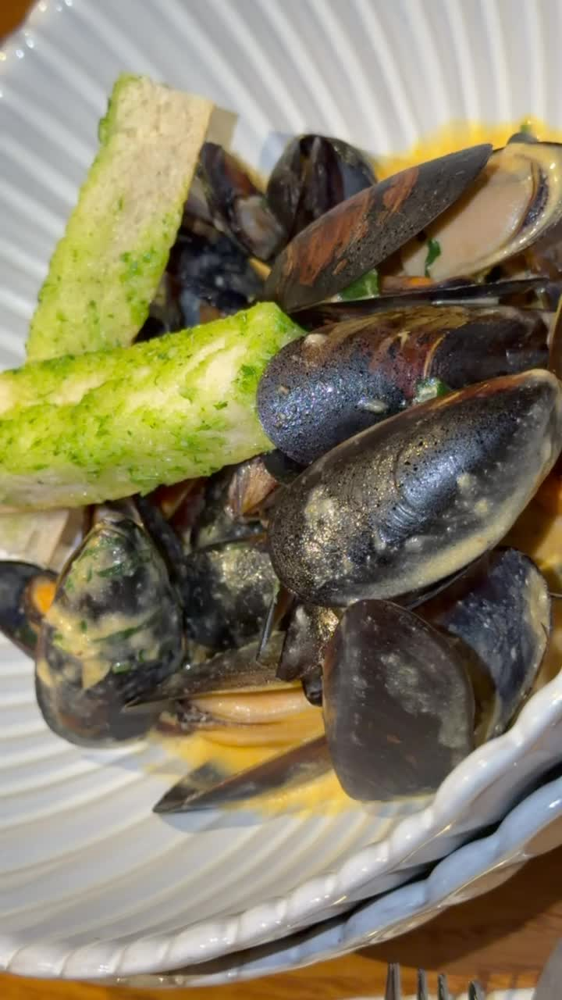
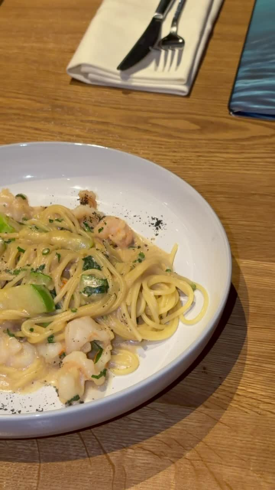
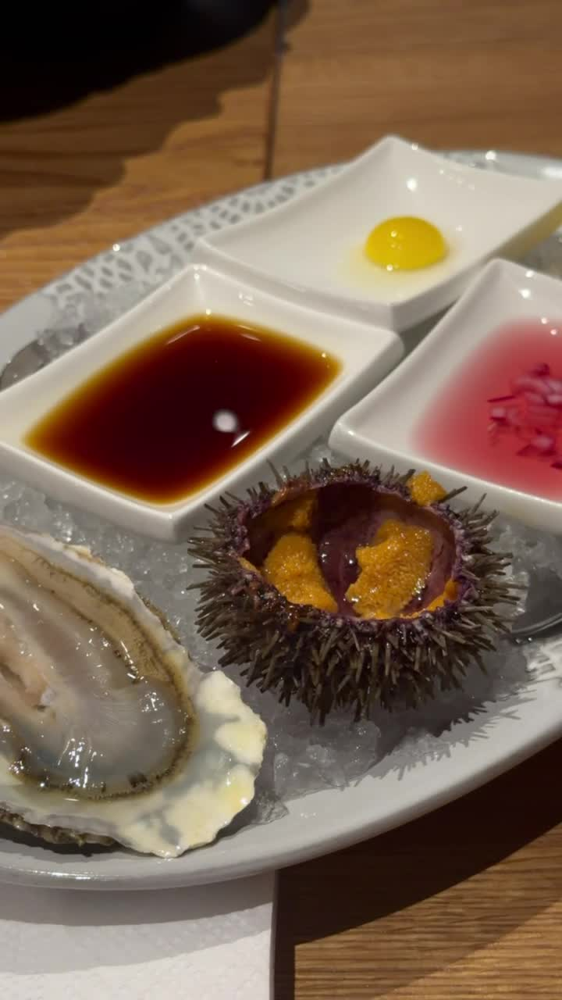
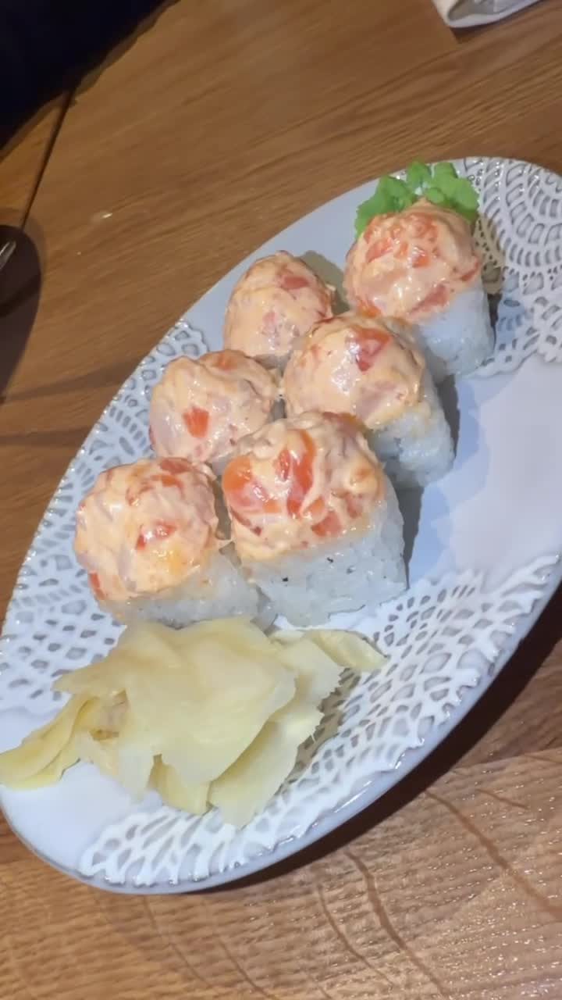

Разбор того, как сырой ресторанный футадж с ужина за морепродуктами превратился в 16-секундный вертикальный рилс с гармоничными переходами, цветокоррекцией и титрами — от съёмки до готового к публикации файла.
Сырые клипы — это документация момента. Кейс — это решение: как из бытовой съёмки в ресторане сделать контент, который держит внимание зрителя первые полторы секунды и ведёт его по драматургии блюд.
Показать ужин как маленькую историю: от эффектного хука с макро-планом до финального кадра с ролловыми суши — так, будто зритель сам сидит за этим столом и пробует каждое блюдо по очереди.
Из восьми необработанных вертикальных клипов с телефона собрать связный ролик 15–17 секунд с плавными, разнообразными переходами, тёплой цветокоррекцией «под аппетит», кириллическими титрами и чистым звуком — без внешнего софта для монтажа, только консольные инструменты.
Семь этапов — от разбора материала до финального рендера с автоматической цветокоррекцией и титрами.
Через mdls вытащены метаданные всех восьми клипов (длительность, разрешение, кодек) без обращения к внешним конвертерам — только штатные средства macOS.
Для каждого клипа собран контакт-лист из трёх кадров (начало / середина / конец), чтобы отсмотреть содержимое без запуска проигрывателя — и на его основе выбрать шесть лучших планов из восьми и выстроить их в логику подачи блюд.
Системного FFmpeg на машине не было — собран рабочий бинарник через Python-пакет imageio-ffmpeg, включающий libx264, freetype и все нужные фильтры для монтажа без Homebrew.
Клипы обрезаны до сильных фрагментов, длинные панорамы ускорены в 1.25×, а между планами подобраны разные типы переходов xfade — zoom-in внутри одного блюда, whip-blur на смене блюда, circle-open на подаче деликатеса.
Единая тёплая цветокоррекция (контраст, насыщенность, цветовой баланс в оранжевый), виньетирование и лёгкая резкость. Кириллические титры на HelveticaNeue с fade-анимацией. Звук — кроссфейды между клипами и нормализация громкости по стандарту loudnorm.
Финальный экспорт в H.264 (CRF 19, profile high) с AAC-звуком 48 кГц и faststart-флагом — файл сразу готов к загрузке в Instagram/TikTok, без пережатия на стороне площадки.
Процесс и результат оформлены в отдельный репозиторий-портфолио с деплоем на GitHub Pages — чтобы кейсом можно было поделиться одной ссылкой.
Пять сильных планов из восьми исходных — мидии, паста с креветками, устрица с морским ежом и роллы.





Весь монтаж — это один filter_complex-граф FFmpeg, без монтажного софта с GUI.
xfade=transition=zoomin
xfade=transition=smoothleft
xfade=transition=hblur
xfade=transition=circleopen
xfade=transition=smoothup
xfade=transition=fadeblack
Шесть разных transition-эффектов — каждый подобран под характер соседних кадров, а не один и тот же на весь ролик.
eq=contrast=1.06:
saturation=1.16
colorbalance=rm=.02:bm=-.02
vignette=a=PI/6
unsharp=5:5:0.4
Тёплый пищевой грейд: усиленная насыщенность, сдвиг баланса в оранжевый, мягкая виньетка и точечная резкость.
acrossfade=d=0.45
atempo=1.25
loudnorm=I=-16:TP=-1.5
aresample=48000
Кроссфейды между дорожками синхронны с видео-переходами, громкость выровнена по вещательному стандарту.